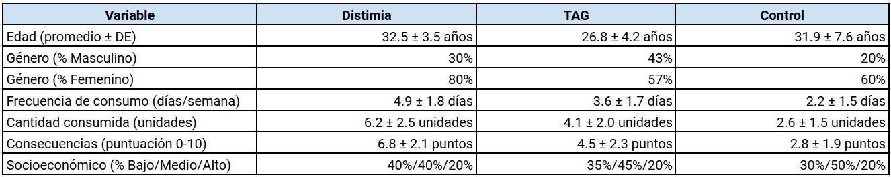
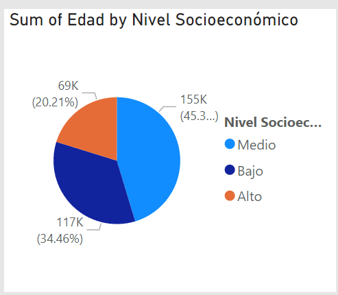

Bienvenidos a la tercera y última entrega de nuestro
proyecto de investigación 2024-2
Aquí encontrarás las correcciones pertinentes a la segunda entrega más la iteración para agregar el contenido correspondiente a la tercera entrega
Tercera entrega
La tercera entrega se encontrará a continuación, ésta tercera parte contiene el contenido y las correcciones de la segunda entrega
adicionando los resultados, el análisis de los mismos y las conclusiones del estudio.
Título
La distimia como factor de riesgo oculto para la dependencia alcohólica en Colombia.
Pregunta de investigación
¿Por qué el trastorno de salud mental como lo es la Distimia, se asocia como uno de los mayores riesgos de dependencia al alcohol en comparación al Trastorno de Ansiedad Generalizada en Colombia en el año 2010?
¿Qué hay de la justificación de la pregunta de investigación?
La presente investigación busca comprender por qué la distimia se asocia de manera más estrecha con la
dependencia al alcohol que el trastorno de ansiedad generalizada en la población colombiana en el período del año 2010.
La elección de Colombia como territorio de estudio se justifica por su alta prevalencia de trastornos mentales y la disponibilidad
de datos para dicho período (Ministerio de Salud de Colombia, 2022).
La naturaleza crónica de la distimia, en contraste con la ansiedad fluctuante del TAG (GAD), podría predisponer
a las personas a buscar en el alcohol un alivio temporal (Schramm, et al., 2020). Además, factores socioculturales como el estigma asociado a la
depresión y la limitada accesibilidad a servicios de salud mental en Colombia podrían exacerbar esta relación (Caplan & Buyske, 2015),
por lo que se hipotetiza que
la distimia podría alterar los sistemas de recompensa del cerebro, aumentando la vulnerabilidad a la dependencia al alcohol
(Ham et al., 2002).
Objetivo General de la investigación
Comparar la prevalencia de la dependencia al alcohol entre individuos con diagnóstico
de distimia y trastorno de ansiedad generalizada (TAG) en una muestra representativa de la población colombiana del año 2010,
explorando sí existen diferencias en los patrones de consumo de alcohol entre estos grupos.
Objetivos específicos de la investigación
Comparar la proporción de individuos con distimia, TAG y sin trastornos psiquiátricos que reportan dependencia al alcohol.
Evaluar sí la gravedad de los síntomas de distimia y TAG se correlaciona con la severidad de la dependencia al alcohol.
Comparar el número de días de consumo de alcohol por semana y la cantidad de alcohol consumida por ocasión entre los tres grupos (distimia, TAG y grupo control).
Hipótesis
Se espera que la prevalencia de dependencia al alcohol sea significativamente mayor en individuos diagnosticados con distimia en
comparación con aquellos diagnosticados con trastorno de ansiedad generalizada (TAG) en la población colombiana de 2010.
Metodología
Diseño del estudio
Este estudio adoptará un diseño transversal, con el objetivo de comparar la prevalencia de dependencia al alcohol
entre individuos diagnosticados con distimia y trastorno de ansiedad generalizada (TAG) en una muestra representativa
de la población colombiana del año 2010.
Población y muestra
La población objetivo incluye adultos colombianos de 20 años o más donde se llevará a cabo un muestreo aleatorio estratificado
para asegurar que las subpoblaciones de distimia y TAG estén adecuadamente representadas para posteriormente calcular
un tamaño de muestra de 3.500 participantes por grupo, utilizando una fórmula de cálculo de tamaño de muestra adecuada para
comparaciones de prevalencia, con un nivel de confianza del 95%.
Criterios de Inclusión
Adultos entre los 20 a 45 años
Adultos con diagnóstico confirmado de distimia o TAG (GAD) según los registros utilizados para la recolección de datos
Criterios de Exclusión
Adultos con historial de trastornos producto del uso de otras sustancias distintas al alcohol
Diagnósticos comórbidos que puedan interferir en los resultados del estudio
Recolección de datos (Medición)
La Recolección de datos se llevará a cabo mediante el uso de documentos y registros clínicos, guvernamentales y académicos.
Análisis de datos
Los datos se analizarán utilizando modelos de machine learning de aprendizaje supervisado y no supervisado como lo son
DBScan y Kmeans para analizar las tendencias de los datos. Además, se realizarán análisis descriptivos para resumir las características
demográficas de los grupos.
Por otro lado, para comparar la prevalencia de la dependencia al alcohol entre los grupos, se utilizará la prueba
chi-cuadrado donde esta se complementará con el análisis de varianza (ANOVA) o regresiones lineales para explorar las diferencias
en patrones de consumo entre los grupos.
Limitaciones
Este estudio presenta algunas limitaciones que deben ser consideradas al interpretar los resultados:
1. Diseño transversal: Al ser un estudio transversal, no se pueden establecer relaciones causales entre la dependencia
al alcohol y los trastornos afectivos. Solo se podrá identificar una asociación entre las variables.
2. Muestra limitada a un año específico: La recolección de datos se limita a una muestra de 2010, lo que puede no reflejar
cambios en la prevalencia o patrones de consumo a lo largo del tiempo.
3. Generalización: Los hallazgos pueden no ser generalizables a poblaciones fuera de Colombia o a diferentes contextos socioculturales.
Consideraciones éticas
Este proyecto de investigación tratará los datos conforme a la ley colombiana de tratamiento de datos, Ley 1581 de 2012 (Ley 1581 de 2012, 2012).
Matriz de datos
Resultados
En este estudio se analizaron diversos factores relacionados con el consumo de alcohol en personas de entre 20 y 45 años de edad,
de género masculino (M) y femenino (F). Se incluyeron participantes con diagnósticos de distimia, trastorno de ansiedad generalizada
(TAG) y un grupo de control sin trastornos psiquiátricos.
La frecuencia de consumo de alcohol se midió en días por semana, con un rango de
0 a 7 días, también se evaluó la cantidad de alcohol consumida por ocasión, expresada en unidades estándar donde 1 unidad equivale a 10 ml
de alcohol puro, donde además se consideró el nivel socioeconómico (NSE) de los participantes, clasificado en bajo, medio y alto. Por otro lado,
se midieron
las consecuencias negativas del consumo de alcohol utilizando una puntuación que va de 0 (ninguna) a 10 (máximas consecuencias negativas).
En la toma de los datos obtuvimos 3500 datos fiables de la población Colombiana con las características descritas en el estudio en el año
2010, el resultado de estos datos obtuvo una media por variable analizada tal como se muestra a continuación:

Los análisis de varianza (ANOVA) revelaron diferencias significativas tanto en la frecuencia de consumo (F(2,297) = 65.4, p < 0.001)
como en la cantidad consumida por ocasión (F(2,297) = 58.7, p < 0.001).
Los resultados obtenidos indicaron que el grupo la población afectada con la distimia,
presentó una frecuencia y cantidad de consumo de alcohol significativamente mayor que el grupo con TAG, y este último superó al grupo
control en ambos aspectos.
Además, se identificó una correlación positiva fuerte entre la gravedad de los síntomas y las consecuencias negativas asociadas al
consumo de alcohol en el grupo con distimia (r = 0.70, p < 0.001), mientras que en el grupo con TAG la correlación fue moderada (r = 0.50,
p < 0.001). Esto sugiere que, especialmente en la distimia, a mayor gravedad de los síntomas, mayores son las consecuencias negativas
derivadas del consumo de alcohol.
El análisis según el nivel socioeconómico mostró que, aunque la frecuencia de consumo es mayor en todos los niveles para el grupo con
distimia, el nivel socioeconómico bajo presenta una frecuencia más alta en general, pero particularmente en el nivel socioeconómico
bajo, la frecuencia de
consumo fue de 5.2 días/semana para distimia y 3.8 días/semana para TAG y 2.5 días/semana para el grupo control. En el estrato socioeconómico
alto, estas
cifras fueron de 4.5, 3.3 y 2.0 días/semana, respectivamente.
Finalmente, se observó que la distimia afecta mayoritariamente al género femenino, siendo las mujeres la mayor parte de la población
afectada en el año 2010, lo que significa que con este hallazgo se resalta la importancia de considerar el género en el abordaje y tratamiento de este trastorno.
Análisis de resultados

En la anterior gráfica se puede observar la distribución socioeconómica de la población.
En la anterior gráfica se puede observar la distribución de la edad por el consumo de alcohol en la población.
En la anterior gráfica se puede observar la distribución de la frecuencia de consumo por género y diagnóstico de la población analizada.
Conclusiones
El estudio demuestra que la distimia está fuertemente asociada con una mayor prevalencia y severidad de dependencia al alcohol en
comparación con el trastorno de ansiedad generalizada (TAG) y el grupo control sin trastornos psiquiátricos. Los individuos con distimia
consumen alcohol con mayor frecuencia (4.9 días por semana) y en mayores cantidades (6.2 unidades por ocasión), experimentando
consecuencias negativas más severas (puntuación promedio de 6.8 sobre 10).
Existe una correlación positiva fuerte entre la
gravedad de los síntomas de distimia y las consecuencias del consumo de alcohol, sugiriendo que los síntomas depresivos crónicos llevan
al uso del alcohol como mecanismo de afrontamiento, lo que sugiere que estos hallazgos confirman que la distimia es un factor de riesgo más significativo para
la dependencia al alcohol que el TAG, destacando la necesidad de intervenciones integrales en salud mental que aborden esta problemática.
REFERENCIAS
1. Ministerio de Salud de Colombia. (2022, 10 octubre). Salud Mental: Asunto de todos. Minsalud.gov.co. https://www.minsalud.gov.co/Paginas/Salud-mental-asunto-de-todos.aspx
2. Schramm, E., Klein, D. N., Elsaesser, M., Furukawa, T. A., & Domschke, K. (2020). Review of dysthymia and persistent depressive disorder: history, correlates, and clinical implications. The Lancet Psychiatry, 7(9), 801-812.
3. Latalova, K., Kamaradova, D., & Prasko, J. (2014). Perspectives on perceived stigma and self-stigma in adult male patients with depression. Neuropsychiatric Disease And Treatment, 1399. https://doi.org/10.2147/ndt.s54081
4. Caplan, S., & Buyske, S. (2015). Depression, Help-Seeking and Self-Recognition of Depression among Dominican, Ecuadorian and Colombian Immigrant Primary Care Patients in the Northeastern United States. International Journal Of Environmental Research And Public Health, 12(9), 10450-10474. https://doi.org/10.3390/ijerph120910450
5. Ham, L. S., Hope, D. A., White, C. S., & Rivers, P. C. (2002). Alcohol expectancies and drinking behavior in adults with social anxiety disorder and dysthymia. Cognitive Therapy And Research, 26(2), 275-288. https://doi.org/10.1023/a:1014582005745
6. Martínez, N. T., Rodríguez, C. J. R., De Santacruz, C., Bautista, N. B., Collazos, J., & Gómez–Restrepo, C. (2016). Problemas mentales, trastornos del afecto y de ansiedad en la población desplazada por la violencia en Colombia, resultados de la Encuesta Nacional de Salud Mental 2015. Revista Colombiana de Psiquiatría, 45, 113-118. https://doi.org/10.1016/j.rcp.2016.09.004
7. Ley 1581 de 2012. (2012). Función Pública. https://www.funcionpublica.gov.co/eva/gestornormativo/norma.php?i=49981
8. GBD compare. (s. f.). Institute For Health Metrics And Evaluation. https://vizhub.healthdata.org/gbd-compare/#
9. Trastornos mentales y suicidio en Colombia. (2010). En ins.gov.co. https://www.ins.gov.co/Direcciones/ONS/informe_14/pdf/trastornos_mentales.pdf